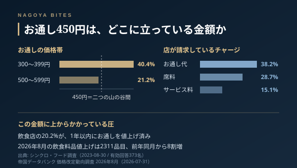

業界の裏側
「お通し450円」に込められた名古屋の居酒屋の意思
お通しをやめる店が増えている。2026年7月には600円のお通しをめぐる揉め事が業界メディアで取り上げられ、訪日客からは「Hidden Fee」と呼ばれた。それでも450円前後のお通しを残している店は名古屋にも多い。廃止が正しいという話ではない。あれは席料であり、原価の回収であり、そして店がどんな客層と付き合うかの意思表示でもある。業界側から、その読み方を書く。

2026年8月の飲食料品の値上げは2311品目、前年同月から8割増になったと中日新聞が7月31日に報じている。中東情勢による原油高が資材と物流に波及した結果だという。原価がこれだけ動くと、店はどこかで価格を触らなければならない。ところが最初に動くのは、たいていメニューの本体ではない。端の方——お通しやチャージから動く。
お通しは料理ではなく、席の使用料の回収である
飲食店経営者への調査（有効回答373名）では、お通し代を請求している店が38.2%、席料が28.7%、サービス料が15.1%だった。名前は違うが、三つとも同じことをしている。座った時点で発生する固定の売上をつくる、という一点だ。
なぜ必要か。居酒屋の粗利はドリンクで作るが、ドリンクの出方は客によって倍以上ぶれる。一方で家賃と人件費は席が埋まった瞬間から確実に発生する。お通しはこのぶれを均す装置で、料理として黒字を出すためのものではない。原価50円程度の既製品を600円で出せば当然もめるが、それは「お通しが悪い」のではなく、装置の設計が雑だという話になる。
450円は、二つの山の谷間にある
同じ調査では、お通しの価格帯は300〜399円が40.4%で最も多く、500〜599円が21.2%で続く。450円はこの二つの山の、ちょうど谷間だ。谷間の金額を選ぶ店は、たいてい意図してそこにいる。
300円台に置くと、仕込みは常温で回せる小鉢に寄る。作り置きの一種類を全席に配る前提になり、オペは軽いが、お通しで店の性格を伝えることは諦めることになる。500円を超えると客の視線が変わり、「この値段を取るなら」という期待が立ち上がる。日替わりにする、皿を替える、説明を一言添える——いずれも仕込みと接客の手数が増える。450円は、その手数を少しだけ払う覚悟がある店の位置だ。回転を上げて数で稼ぐ設計ではなく、二軒目に流れず一軒で長く飲んでほしい店に多い。
「断れるか」で店の仕込みが読める
お通しカットに応じられるかどうかは、接客の親切さではなく仕込みの設計で決まる。全席分を先に仕上げて冷蔵しておく店は、断られると単純に廃棄になるので受けにくい。注文が入ってから小鉢を組む店は受けられる。だから「お通しカットできますか」と聞いたときの反応は、その店がどれくらい手を動かしているかの目安になる。断られた店が不親切なのではない。
訪日客の増加で、この慣習は説明を求められる側に回った。直近の業界記事では、入口とメニューに多言語で席料として明記する、断る選択肢を用意する、といった改善策が挙がっている。法的にも線ははっきりしていて、会計時に初めて告げられた料金は、事前の表示や説明がなければ合意が成立していないと整理される。逆に言えば、先に書いてあれば揉めない。名古屋の店で「お通し450円」とメニューの頭に書いてある店は、その一行で先に手当てを済ませている。
客側の使い方
お通しは、その日の仕込みの断面が最初に出てくる皿でもある。調査では64.4%の店がお通しの質にこだわると答えている。座って最初に出てきたものが日替わりの気配を持っているか、常温の作り置きかで、その先の料理の期待値はだいたい決まる。450円払ったなら、まずそこを見ておくと元は取れる。
Inside Perspective — 業界人の目利き
- お通し・席料・サービス料は名前が違うだけで機能は同じ。ドリンクの出方のぶれを均し、席が埋まった時点の固定売上をつくる装置で、料理として黒字を出すためのものではない
- 価格帯は300〜399円が40.4%、500〜599円が21.2%。450円はその谷間で、日替わりや盛り付けに手数を払う覚悟がある店が選びやすい位置にある
- お通しカットの可否は仕込みの設計で決まる。先に全席分を仕上げる店は廃棄になるので受けにくく、注文後に組む店は受けられる。断られた店が不親切なわけではない